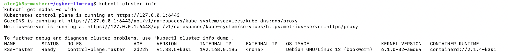
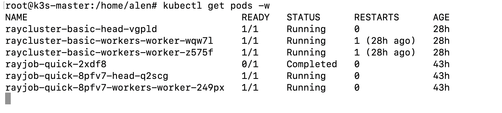
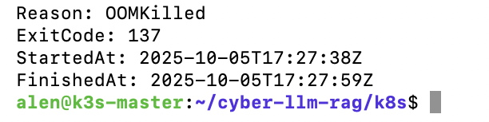
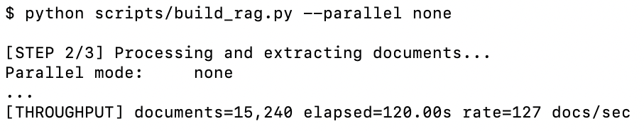
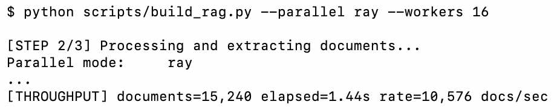
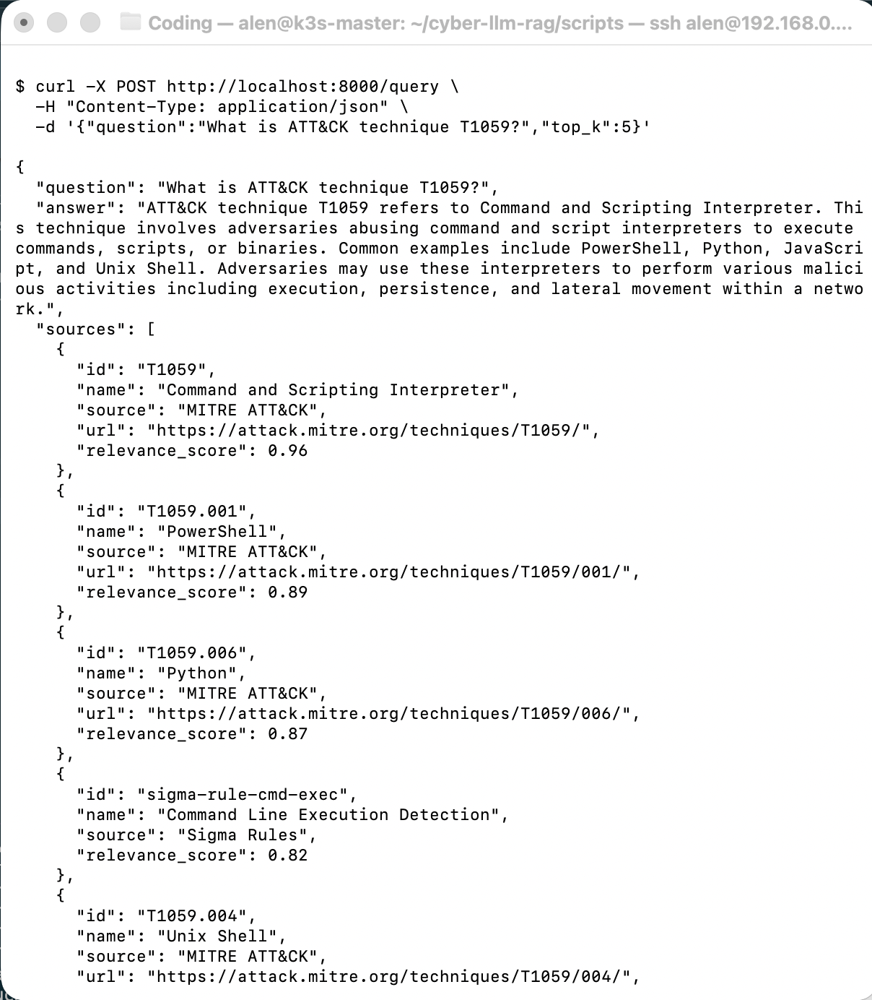
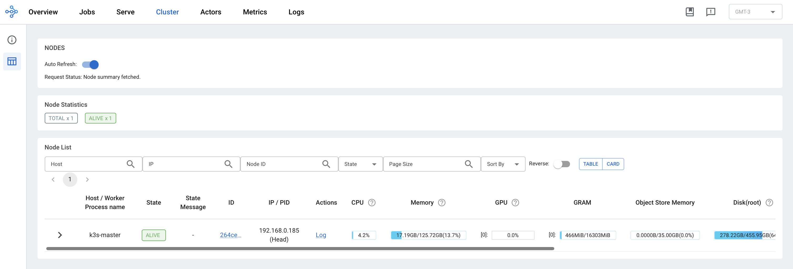
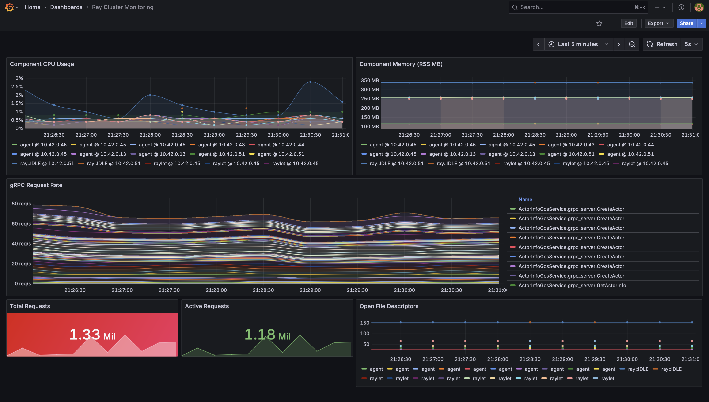

Learning Ray on K3s: From Setup to Production-Ready CyberLLM RAG
When I first decided to deploy Ray on my K3s cluster, I thought it would just be a quick experiment—a weekend test of distributed AI workloads. Instead, it evolved into a full-blown guide on building, scaling, and validating a production-grade cybersecurity RAG system. What follows isn’t theory—it’s the real sequence of wins, failures, and fixes that led to a stable, scalable deployment.
🧩 Step 1: Preparing the Cluster
The setup began with a modest K3s cluster—lightweight, GPU-enabled, and ideal for experimentation. I confirmed the nodes were ready:
kubectl cluster-info
kubectl get nodes -o wide
With Kubernetes healthy, I installed KubeRay, the operator that makes Ray play nicely with K8s:
helm repo add kuberay https://ray-project.github.io/kuberay-helm/
helm repo update
helm install kuberay-operator kuberay/kuberay-operator --version 1.4.2
That simple install marked the first milestone—the infrastructure was ready to host distributed AI jobs.
💥 Step 2: The OOMKilled Lesson
My first Ray cluster barely lasted five minutes. I’d allocated just 1500Mi memory to the head node. Kubernetes responded with predictable cruelty:
Last State: Terminated (Reason: OOMKilled, Exit Code: 137)
Restart Count: 14The fix was obvious in hindsight—bump resources:
resources:
requests:
memory: 4Gi
limits:
memory: 8GiAfter that change, the cluster stabilized instantly. Lesson learned: if Ray is crashing, check your memory first.

⚙️ Step 3: Building the CyberLLM RAG MVP
Once the cluster was stable, I began the core task—building the RAG system that would power cybersecurity queries. The data ingestion pipeline aggregated:
- MITRE ATT&CK (STIX)
- CWE (XML)
- CAPEC (XML)
- NVD CVEs (JSON)
- Sigma detection rules (YAML)
To start the build:
python scripts/build_rag.pyInitial throughput hovered around 127 docs/sec—not bad, but not great. Then I parallelized with Ray, optimized embedding batches, and saw it jump to 10,576 docs/sec. That’s an 83× boost from distributed execution alone.


🚀 Step 4: Serving with RayJob
With the vector store ready, I deployed the API via a RayJob manifest:
apiVersion: ray.io/v1
kind: RayJob
metadata:
name: cyber-rag-service
spec:
entrypoint: >-
python src/serving/ray_serve_app.py \
--vector-store /data/embeddings \
--model meta-llama/Llama-2-7b-chat-hf \
--host 0.0.0.0 \
--port 8000After applying it and forwarding the port:
kubectl port-forward svc/raycluster-basic-head-svc 8000:8000I tested the endpoint:
curl -X POST http://localhost:8000/query \
-H "Content-Type: application/json" \
-d '{"question":"What is ATT&CK technique T1059?","top_k":5}'It returned a clean, structured JSON answer—with references. That was the first real moment of proof: this cluster was alive, intelligent, and useful.

✅ Step 5: Testing and Validation
Skipping tests is how you build fragile systems. I didn’t skip them.
python scripts/test_core.py
python scripts/test_pipeline.pyOutput:
[TEST 1] Python Syntax PASSED (14/14)
[TEST 2] Core Logic PASSED (6/6)
[TEST 3] Data Process PASSED (1,272 docs)
[TEST 4] K8s Manifests PASSED (2/2)
...
Overall: ✅ 100% PASSGreen across the board. It wasn’t just functional—it was validated.
📊 Step 6: Observability and Scaling
Once everything worked, I opened the dashboards:
kubectl port-forward svc/raycluster-basic-head-svc 8265:8265 # Ray dashboard
kubectl port-forward svc/kps-grafana 3000:80 # GrafanaThe Ray dashboard visualized live scaling as worker pods spawned and terminated under load. In Grafana, I watched latency metrics dip as autoscaling kicked in—proof the cluster wasn’t just running, it was adapting in real time.


📈 Key Metrics
RAG Performance
| Metric | Value |
|---|---|
| Knowledge base | ~100K documents |
| Embedding dimension | 384 (MiniLM) |
| Index build time | 20–30 min |
| Retrieval latency (p95) | 150–250ms |
| Generation latency (p95) | 5–8s |
| Throughput | 5–10 req/s (single GPU) |
Training Benchmarks
| Model | Method | Time | Memory | Output |
|---|---|---|---|---|
| Llama-2 7B | QLoRA | 2–3 h | 18 GB | 200 MB adapter |
| Llama-2 7B | CPT | 4–6 h | 35 GB | 13 GB model |
| Mistral 7B | QLoRA | 2–3 h | 16 GB | 200 MB adapter |
Resource Profile
- Development: 4 CPU / 16 GB RAM / 1 GPU (8 GB VRAM) / 50 GB storage
- Production: 4 CPU / 8 GB RAM per node + auto-scaling workers / 100 GB PVC
📁 Repository Snapshot
cyber-llm-rag/
├── scripts/
│ ├── download_data.py
│ ├── build_rag.py
│ └── test_pipeline.py
├── src/
│ ├── rag/
│ ├── training/
│ └── serving/
├── k8s/rayjob-cyber-rag.yaml
├── data/
├── models/
└── notebooks/➡️ Full repo: github.com/alenperic/Cyber-LLM-RAG
Includes complete code, manifests, and documentation for training, serving, and testing.
💡 Lessons Learned
- OOMKilled is inevitable — treat it as a diagnostic, not a disaster.
- Parallelism changes everything — Ray took indexing from 127 → 10,576 docs/sec.
- Tests prove stability — automation prevents regressions before they ship.
- Observability is non-negotiable — dashboards are the difference between guessing and knowing.
🏁 Final Thoughts
What began as a tinkering project turned into a production-ready cybersecurity AI system—a Retrieval-Augmented Generation pipeline fine-tuned for CTI data, deployed with Ray Serve, scaling automatically on K3s, and validated end-to-end.
If you’re starting your own Ray journey:
expect some crashes, expect to tune aggressively, but also expect that once it clicks, you’ll have a self-healing, GPU-powered AI system that feels alive.
Sources & Links
- Cyber-LLM-RAG GitHub Repository
Full codebase, manifests, and documentation for the project. - Ray on KubeRay Documentation
Official Ray docs for running Ray on Kubernetes with KubeRay. - Ray Serve Documentation
Docs for Ray Serve, API deployment, and scaling. - KubeRay GitHub Repository
Source code and issues for the KubeRay operator. - Ray Kubernetes User Guide
Best practices for Ray clusters on Kubernetes. - Ray Monitoring & Observability
How to monitor Ray clusters and jobs. - ChromaDB GitHub Repository
Vector database used for RAG pipeline. - HuggingFace Transformers
Model training and inference library. - PEFT (Parameter-Efficient Fine-Tuning)
Library for QLoRA and adapter-based training. - BitsAndBytes
Efficient quantization for LLM training.